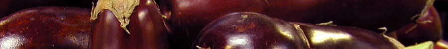
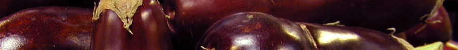

| News | Events | Resources | About | Contact |

|
||||||
| ...promoting investment in environmentally, socially and culturally sustainable food systems | ||||||
|
||||||
 | ||||||
|
What is a A food system includes all processes involved in feeding a population: growing, harvesting, processing, packaging, transporting, marketing, consumption and disposal of food and food-related items. Social, political, economic and environmental factors influence a system's well being and economic fortitude. |
Welcome to Slow Money Austin Inspired by the national Slow Food and Slow Money movements, Slow Money Austin was formed to promote capital opportunities for local, organic and sustainable food enterprises throughout Central Texas. Join us. Join Us on April 21 & April 22! Slow Money Austin 2010 ShowcaseCo-hosted by the City of Austin April 21, 12:30 - 5:00 p.m. Council Chambers, Austin City Hall, 301 W. 2nd Street, Austin, TX Slow Money Austin Fundraising Dinner Co-hosted by Barr Mansion April 22, 6:00 p.m. Barr Mansion, 10463 Sprinkle Road, Austin, TX Visit our Events section for details. |
Our Partners Skematik |
| Copyright © 2010 Slow Money Austin - All Rights Reserved |